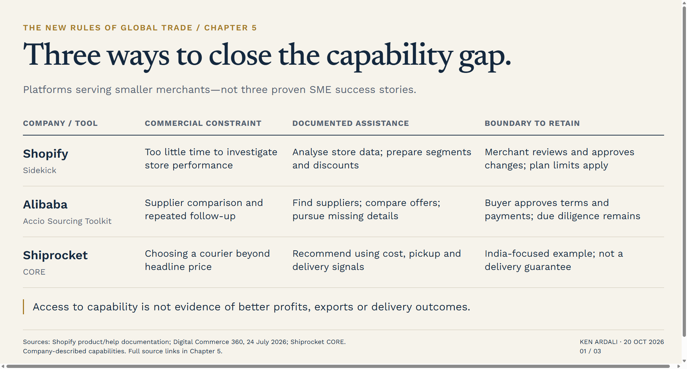
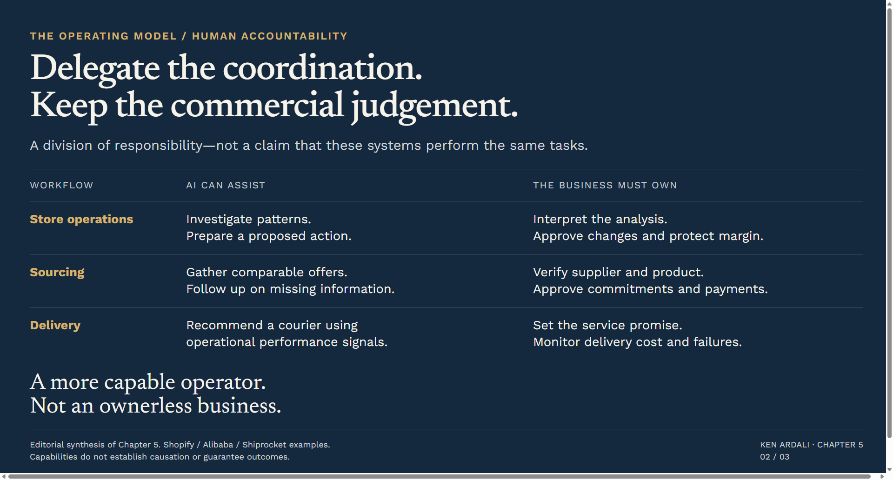
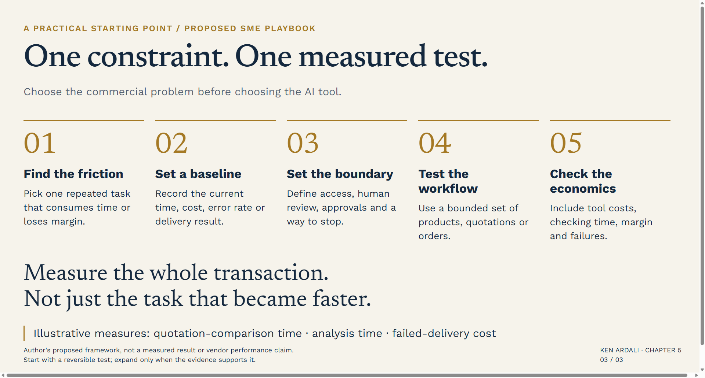

A small business does not lose an international opportunity because it lacks an AI strategy.
It loses it because nobody has time to compare the suppliers properly. Because the owner cannot see which products are actually making money. Because a delivery decision saves a little on carriage and costs much more in failed orders. Because the person responsible for growth is also responsible for everything else.
That is the more useful starting point for the AI debate.
In the previous chapter, I argued that the strongest commerce operators connect demand, payment, data and fulfilment rather than treating them as separate departments. For a smaller business, the obvious objection is resources. How do you build that kind of operating capability without the budget, people or infrastructure of a large company?
AI offers part of an answer.
Not because it makes size irrelevant. Not because a chatbot can run an export business. But because it can make specific analytical and operational capabilities available inside tools a merchant can use without building an entire department first.
Three companies from the commercial landscape explored in this series—Shopify, Alibaba and Shiprocket—show different parts of that opportunity. Their relevance is not that they are SMEs. It is that they offer capabilities smaller businesses can access.

The Gap Is Capability, Not Just Cost
The wrong question is: how many people can AI replace?
The better question is: what useful work are we currently unable to do?
For a small retailer, that might mean investigating a fall in conversion rather than simply spending more on advertising. For a brand developing a new product, it might mean comparing supplier quotations on the same basis. For an online seller, it might mean choosing a courier on likely delivery performance as well as headline price.
Those are not abstract technology problems. They are commercial decisions constrained by time, information and attention.
My argument is that AI's most important levelling effect is not cheaper content. It is reducing the effort required to turn information into a decision—and a decision into completed work.
But there is a condition. The business must know what outcome it is trying to improve.
Automating an unclear process does not make it a strategy. It makes it a faster unclear process.
Shopify: Bringing Analysis Closer to Action
Shopify provides a useful example because its Sidekick assistant sits inside the merchant's operating environment rather than in a separate conversation with no knowledge of the store.
In its May 2025 release, Shopify described Sidekick analysing a question such as “Why did sales decline last month?” using inventory, marketing campaigns and seasonal trends. It also described running reports, creating customer segments, filtering orders and setting up discount codes—with the merchant's approval.1
The practical significance is the shorter distance between asking a question and doing something useful with the answer.
Consider an owner who sees revenue falling. An illustrative workflow would be to ask Sidekick to compare sales periods, examine the relevant store data, then prepare a customer segment or discount for review. Shopify's help documentation describes sales comparisons and assistance populating discount forms; it also makes clear that store changes require approval.23
That does not establish why revenue fell. Nor does it prove a discount is the right response.
The owner still needs to distinguish a demand problem from a stock problem, and a conversion problem from a margin problem. A promotion that restores revenue while destroying contribution is not a successful intervention.
What changes is access to analysis and execution support. The merchant can investigate and prepare a response without first commissioning a separate project.
There are boundaries. Shopify says Sidekick is included with a Shopify plan, with features and usage limits varying by plan. Its setup guide says it cannot make store changes without approval or handle customer-support conversations on the merchant's behalf.34
The lesson is not that the small merchant suddenly has an autonomous management team. It is that some of the work between noticing a problem and acting on it becomes more accessible.
Alibaba: Reducing the Coordination Burden of Sourcing
International sourcing creates a different bottleneck.
Finding a supplier is only the beginning. The work is making requirements clear, obtaining comparable quotations, chasing missing answers and understanding the trade-offs between price, minimum quantities, lead times and shipping terms.
Alibaba International's Accio began as an AI-powered B2B sourcing engine in November 2024. Its March 2026 announcement introduced Accio Work as a broader agent platform for businesses, including sourcing and supplier negotiation capabilities. These were company claims, not independently demonstrated commercial results.5
More specifically, Digital Commerce 360 reported in July 2026 that Alibaba's Accio Sourcing Toolkit lets buyers enter target pricing, lead times and specifications, then uses agents to identify suppliers, gather offers and follow up on missing information. According to Alibaba's description in that report, negotiations can address sample costs, minimum order quantities, production lead times and shipping terms.6
This is relevant to an SME because coordination itself consumes scarce management time.
Imagine a small homewares brand exploring a new product range. Its initial problem may not be a shortage of potential manufacturers. It may be that ten quotations describe ten slightly different products, with different packaging assumptions, payment terms and delivery commitments.
An AI-assisted workflow could help organise those conversations and expose the missing information. That is an illustrative use case, not a verified customer result.
It is also not a substitute for checking the supplier.
A persuasive quotation does not prove product quality. A clear comparison does not establish factory capacity, intellectual-property ownership, certification or the full landed cost. Those remain matters for due diligence and, where necessary, specialist advice.
The reported approval boundaries matter: Alibaba says users must approve pricing, commercial terms and purchase orders before submission, and payments require explicit confirmation.6
That is the sensible division of labour. Let the system help with repetitive coordination. Keep responsibility for the commercial commitment with the business.
Shiprocket: AI Does Not Have to Be a Chatbot
The third example is deliberately less conversational.
Shiprocket's Courier Recommendation Engine, CORE, is described by the company as an AI-based tool for selecting a courier for each shipment. Its documentation says it considers more than 50 data points, including delivery performance, pickup performance, cash-on-delivery remittance and the proportion of undelivered orders returned to the seller. Merchants can compare options using criteria including price, rating and delivery performance.7
This is an India-focused example. The product page frames coverage in domestic PIN codes; it does not establish that the same recommendation capability is available for every international shipping route.7
The broader commercial lesson travels better than the product's geographic coverage.
The cheapest label is not necessarily the cheapest completed delivery.
An SME should assess shipping against the outcome it needs: successful delivery, acceptable timing, manageable returns and predictable cash flow. AI-assisted recommendations can inform that assessment, but the recommendation is not a guarantee that a parcel will arrive.
Shiprocket also markets Sense APIs for address validation, address standardisation, risk intelligence and checkout intelligence. These are separate capabilities, not evidence that every seller automatically receives every feature through CORE.8
What makes this example useful is precisely that it is not about generating more words or images. It is about applying data to an operational decision.
For a business whose margins are lost after checkout, that may be a more valuable starting point than another content tool.
Three Examples — The Capability and the Boundary
| Company / tool | Commercial constraint | AI-assisted capability | What the business must retain |
|---|---|---|---|
| Shopify / Sidekick | Limited time to investigate store performance | Analyse store data; prepare customer segments and discounts | Review the analysis and approve changes; plan and usage limits apply |
| Alibaba / Accio Sourcing Toolkit | Supplier comparison and repetitive follow-up | Find suppliers, compare offers and pursue missing details | Supplier and product due diligence; approval of terms, orders and payments |
| Shiprocket / CORE | Choosing a courier beyond headline price | Recommend couriers using cost, pickup and delivery performance signals | Set the service promise and monitor results; this is an India-focused example |
Sources: Shopify's announcement and help documentation; Digital Commerce 360's reporting of Alibaba's toolkit; Shiprocket's CORE documentation.1367
These are documented capabilities offered to merchants, not proof of improved SME profits or export performance.
What AI Does Not Level
These examples support a narrower, more useful claim than the idea that AI makes everyone equal.
They show access to capabilities. They do not demonstrate equal outcomes.
A small firm using AI still needs a differentiated product, viable unit economics, reliable fulfilment and a reason for customers to trust it. It still needs to understand where it can legally sell and what promises it can keep.
It also acquires dependencies. Sidekick operates within Shopify. Accio's sourcing workflow is connected to Alibaba's ecosystem. Shiprocket's recommendations operate within its logistics environment.467
My interpretation is that this creates a trade-off: a smaller business can gain capabilities without building them, while becoming more reliant on the platform supplying them.
That is not necessarily a bad bargain. It is a bargain that should be understood.
The owner should ask what the tool can see, what it can change, which decisions require approval and what happens if the business wants to leave.
Convenience is useful. Unexamined dependence is not a strategy.

A Practical Starting Point for an SME
Do not begin with a list of AI products.
Begin with one recurring commercial constraint.
Choose a workflow where the problem is visible and the result can be measured: time spent comparing quotations; time needed to investigate a sales decline; failed-delivery cost on a defined group of orders.
Record the baseline before changing anything. Decide who reviews the output and which actions must never happen without approval. Keep a way to stop or reverse the workflow.
Then test whether the improvement survives contact with the economics.
Time saved is useful only if it is worth more than the tool, integration and checking required. More orders are useful only if they produce acceptable margin. Faster sourcing is useful only if quality and risk remain under control.
For an international business, judge the whole transaction—not just the step the software makes easier.
A faster supplier search does not remove customs requirements. A better storefront does not fix local returns. A recommended courier does not make an unrealistic delivery promise credible.
Start small, but measure the complete commercial consequence.

The Opportunity — One Clear Takeaway
AI is not the great leveller because it removes the advantages of scale.
It can be a leveller because a smaller business no longer has to build every capability before it can begin using it.
Shopify illustrates the connection between store analysis and action. Alibaba illustrates the coordination work behind sourcing. Shiprocket illustrates data-informed decisions after the sale.
The common thread is not autonomous commerce. It is a more capable operator.
The question for an SME is therefore not: how do we become an AI business?
It is: which commercial constraint could we remove if our existing team had better information and less repetitive work?
Answer that clearly, retain responsibility for the decisions, and AI becomes something more useful than a technology story.
It becomes part of the operating model.
If you are assessing where AI could strengthen an international growth or ecommerce model, reach out directly on LinkedIn.
Sources
- Shopify: Summer ’25 Sidekick announcement
- Shopify Help: Sidekick help and guidance
- Shopify Help: Setting up Sidekick
- Shopify: Sidekick product and plan information
- Alibaba International: Accio Work launch release, 23 March 2026
- Digital Commerce 360: Accio Sourcing Toolkit, 24 July 2026
- Shiprocket: Courier Recommendation Engine (CORE)
- Shiprocket: Sense APIs